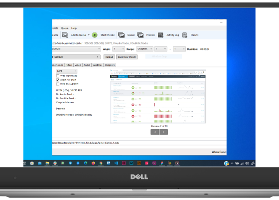

Handbrake
The open source video transcoder
HandBrake is a tool for converting video from nearly any format to a selection of modern, widely supported codecs

HandBrake
HandBrake is a tool for converting video from nearly any format to a selection of modern, widely supported codecs
Get started with HandBrake in seconds by choosing a profile optimised for your device, or choose a universal profile for standard or high quality conversions. Simple, easy, fast. For those that want more choice, tweak many basic and advanced options to improve your encodes.
Handbrake can process most common multimedia files and any DVD or BluRay sources that do not contain any kind of copy protection.